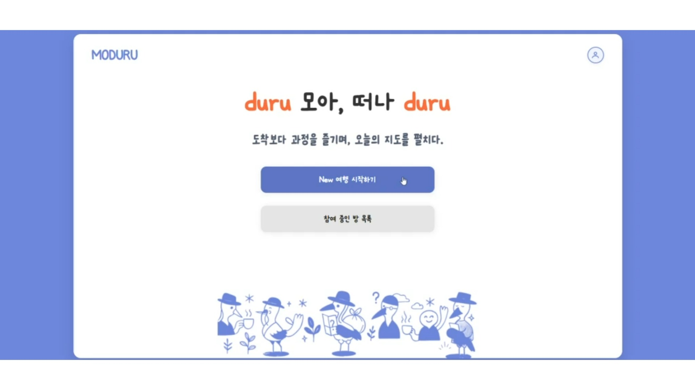
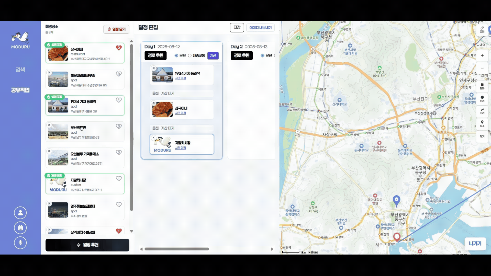
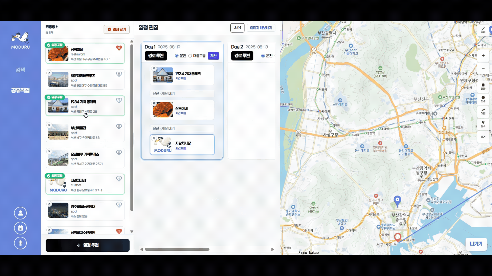

← 돌아가기

모두루 (MODURU)
프로젝트 개요
1개월 동안 여행 일정 동시 편집 서비스 MODURU를 개발하여 친구들과 실시간 장소 공유·투표· AI 추천 일정/동선 반영이 가능한 실시간 여행 일정 협업 플랫폼을 구축했습니다. WebSocket(STOMP+SockJS)·Redux 기반의 실시간 협업, Drag & Drop 편집, 지도 시각화, 리뷰·마이페이지 기능을 제공합니다.
- 프로젝트명: MODURU (실시간 여행 일정 협업 서비스)
- 기간: 2025.07.14 ~ 2025.08.18
- 팀 구성: 6명 (프론트엔드 2, 백엔드 2, AI 1, 인프라 1)
기술 스택
- Frontend: React 18, Redux Toolkit, Vite, Axios, WebSocket(STOMP + SockJS)
- Backend: Java 17, Spring Boot 3.1.6, Spring Data JPA + QueryDSL, Spring Security + JWT, Spring WebSocket
- DB/Storage: PostgreSQL, Redis(Pub/Sub, Cache), Elasticsearch, Docker Compose
- Infra/Etc: AWS EC2, S3, Nginx(리버스 프록시/SSL), LiveKit(SFU), Docker, Gradle
서비스 주요 화면



주요 기능
-
AI 기반 맞춤 여행 일정 생성
- AI 추천장소, AI 일정 자동 구성, AI 최적 동선 추천
-
동행자 실시간 협업 기능
- 행 추가, 희망 장소 공유, 장소 투표, 장소 좋아요
-
지도 기반 장소 확인 및 일정 시각화
- 지도 마커 표시, 좋아요 장소 시각화, 일정표 작성/미리보기
-
유저 주도 일정 편집 및 공유
- Drag & Drop 일정 편집, 일정 내보내기, 여행 지역 재설정
-
리뷰 기반 장소 정보 제공
- 리뷰 보기, 객관적 태그, 주관적 긍/부정, 리뷰 태그 기반 정보, 작성 리뷰 조회
-
개인 정보 공간 제공
- MY 트레블 스페이스, 좋아요 목록, 작성 리뷰, 개인정보
사용한 기술 스택
- 프레임워크: React 18
- 언어: JavaScript
- 상태관리: Redux Toolkit
- 빌드/개발도구: Vite
- API 통신: Axios
- 실시간 통신: WebSocket(STOMP + SockJS)
- 스타일링: CSS, Tailwind CSS
React 18
Redux Toolkit
JavaScript
Vite
Axios
WebSocket(STOMP+SockJS)
CSS
Tailwind CSS
나의 역할
- 프론트엔드 리드 & 팀장 — 일정 관리 아키텍처·컴포넌트 구조 수립 및 일정 UX 가이드 정의
- Redux × WebSocket 연동 — 자동 재연결/메시지 큐잉/중복 억제, 구독 타이밍 최적화
- Drag & Drop 보드 —
schedulePublishMiddleware, 150ms 디바운스 + 페이로드 비교로 트래픽 절감 - AI 추천 결과 매핑 —
aiScheduleSlice,aiRouteSlice설계 및 카드/보드 매핑 - 지도 시각화 — Redux 상태 기반 Kakao Map 마커/레이어 렌더링, 좋아요/투표 반영
핵심 성과
- 실시간 동기화 품질 향상: 자동 재연결·큐잉·구독 최적화로 동기화 성공률 60% → 90% 개선
- 체감 성능 개선: Drag & Drop 반영 속도 1.5초 → 0.4초 단축(−73%), 과도 트래픽 억제
- 협업 UX 완성도: 희망 장소 공유·투표·좋아요가 보드/지도에 실시간 반영되는 협업 경험 구현
- AI 추천 활용성 증대: 일정·경로 추천 결과를 카드/보드에 매핑하여 즉시 편집 가능
기술적 도전과 해결
문제 1: 실시간 협업 중 웹소켓 끊김 및 메시지 유실
- 원인: 재연결 로직 부재, 발행 메시지 반영 누락
- 해결: 자동 재연결 + 메시지 큐잉, Redux 반영 순서 조정, 구독 시점 변경
- 결과: 동기화 성공률 60% → 90% 개선
문제 2: 일정 Drag & Drop 반영 지연
- 원인: Redux·WebSocket 동시 갱신 중복 렌더링, 과도한 Drag 이벤트
- 해결:
schedulePublishMiddleware,fromWs플래그, 150ms 디바운스 + 페이로드 비교 - 결과: 반영 속도 1.5초 → 0.4초 (−73%), 트래픽 감소
문제 3: AI 추천 결과 UI 반영 일관성
- 원인: 복잡한 응답 구조로 상태/컴포넌트 매핑 불일치
- 해결:
aiScheduleSlice,aiRouteSlice로 구조화, 카드/보드 매핑 체계 확립 - 결과: AI 추천 일정을 즉시 확인·편집 가능